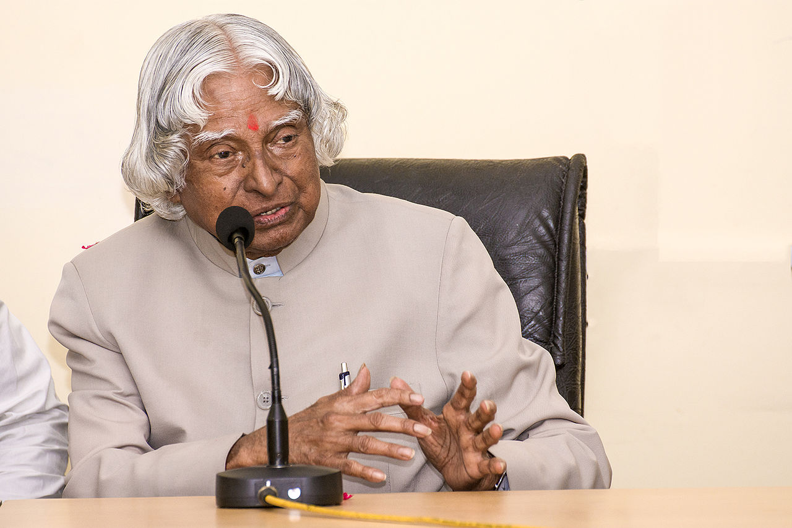

Dr. APJ Abdul Kalam
The man who is also known as the missile man of india
Avul Pakir Jainulabdeen Abdul Kalam was an Indian aerospace scientist who served as
the 11th president of India from 2002 to 2007.
- 1931 October : Born on 15 October 1931 to a Tamil Muslim family in the pilgrimage centre of Rameswaram on Pamban Island, then in the Madras Presidency and now in the State of Tamil Nadu.
- 1955 : Kalam moved to Madras to study aerospace engineering in Madras Institute of Technology.
- 1960 : As a scientist after becoming a member of the Defence Research & Development Service (DRDS). He started his career by designing a small hovercraft, but remained unconvinced by his choice of a job at DRDO
- 1963 : In 1963 to 1964, he visited NASA's Langley Research Center in Hampton, Virginia; Goddard Space Flight Center in Greenbelt, Maryland; and Wallops Flight Facility.
- 1965 : Kalam had first started work on an expandable rocket project independently at DRDO in 1965.
- 1969 : In 1969, Kalam received the government's approval and expanded the programme to include more engineers.
- 1969 July : Kalam was transferred to the Indian Space Research Organisation (ISRO) where he was the project director of India's first Satellite Launch Vehicle (SLV-III) which successfully deployed the Rohini satellite in near-earth orbit in July 1980;
- 1981 : The Government of India honoured him with the Padma Bhushan in 1981 and the Padma Vibhushan in 1990 for his work with ISRO and DRDO and his role as a scientific advisor to the Government.
- 1992 July : Kalam served as the Chief Scientific Adviser to the Prime Minister and Secretary of the Defence Research and Development Organisation from July 1992 to December 1999.
- 1997 : Kalam received India's highest civilian honour, the Bharat Ratna, for his contribution to the scientific research and modernisation of defence technology in India.
- 1998 : In 1998, along with cardiologist Soma Raju, Kalam developed a low cost coronary stent, named the "Kalam-Raju Stent".
- 1999 : Wings of Fire: An Autobiography by A P J Abdul Kalam.
- 2001 December : Perhaps the most notable plea was from Afzal Guru, a Kashmiri terrorist who was convicted of conspiracy in the December 2001 attack on the Indian Parliament and was sentenced to death by the Supreme Court of India in 2004.
- 2002 : He won the 2002 presidential election with an electoral vote of 922,884, surpassing the 107,366 votes won by Lakshmi Sahgal.
- 2002 25 July : Kalam became the 11th President of India, succeeding K. R. Narayanan.
- 2012 May : Kalam launched a programme for the youth of India called the What Can I Give Movement, with a central theme of defeating corruption.
- 2013 : He was the recipient of the Von Braun Award from the National Space Society "to recognize excellence in the management and leadership of a space-related project". Following his death, Kalam received numerous tributes.
- 2015 15 October : The Tamil Nadu state government announced that his birthday, 15 October, would be observed across the state as "Youth Renaissance Day;" the state government further instituted the "Dr. A.P.J. Abdul Kalam Award," constituting an 8-gram gold medal, a certificate and ₹500,000 (US$7,800).
- 2015 : On 27 July 2015, Kalam travelled to Shillong to deliver a lecture on "Creating a Livable Planet Earth" at the Indian Institute of Management Shillong. While climbing a flight of stairs, he experienced some discomfort, but was able to enter the auditorium after a brief rest. At around 6:35 p.m. IST, only five minutes into his lecture, he collapsed. He was rushed to the nearby Bethany Hospital in a critical condition; upon arrival, he lacked a pulse or any other signs of life. Despite being placed in the intensive care unit, Kalam was confirmed dead of a sudden cardiac arrest at 7:45 p.m IST. His last words, to his aide Srijan Pal Singh, were reportedly: "Funny guy! Are you doing well?"

A dream is not that which you see while sleeping, it is something that does not let you sleep
-- Dr. APJ Abdul Kalam